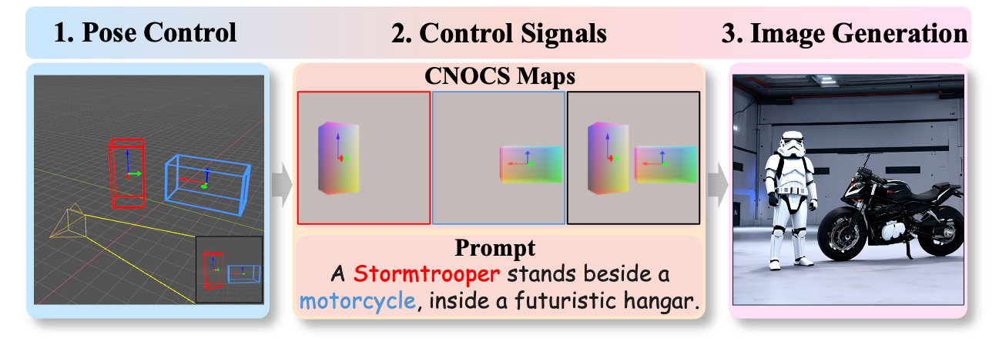

Abstract
Controllable image generation has attracted increasing attention in recent years, enabling users to manipulate visual content such as identity and style. However, achieving simultaneous control over the 9D poses (location, size, and orientation) of multiple objects remains an open challenge. Despite recent progress, existing methods often suffer from limited controllability and degraded quality, falling short of comprehensive multi-object 9D pose control. To address these limitations, we propose SceneDesigner, a method for accurate and flexible multi-object 9-DoF pose manipulation. SceneDesigner incorporates a branched network to the pre-trained base model and leverages a new representation, CNOCS map, which encodes 9D pose information from the camera view. This representation exhibits strong geometric interpretation properties, leading to more efficient and stable training. To support training, we construct a new dataset, ObjectPose9D, which aggregates images from diverse sources along with 9D pose annotations. To further address data imbalance issues, particularly performance degradation on low-frequency poses, we introduce a two-stage training strategy with reinforcement learning, where the second stage fine-tunes the model using a reward-based objective on rebalanced data. At inference time, we propose Disentangled Object Sampling, a technique that mitigates insufficient object generation and concept confusion in complex multi-object scenes. Moreover, by integrating user-specific personalization weights, SceneDesigner enables customized pose control for reference subjects. Extensive qualitative and quantitative experiments demonstrate that SceneDesigner significantly outperforms existing approaches in both controllability and quality.
Manipulation
SceneDesigner introduces a user interaction workflow that makes complex 3D scene creation accessible. The process begins with the user operating in a simple 3D interface, where they can place, scale, and rotate cuboids to visually define the precise 9-DoF pose for each desired object. Then, the system will convert the user-defined 3D layout into a novel 2D representation called a CNOCS Map. This map, combined with the text prompt, serves as a comprehensive guide for the generative model, which then produces a high-fidelity image that strictly conforms to the user's spatial and semantic specifications.
Methodology

We propose CNOCS Map, a representation for 9-DoF pose. For each pixel that belongs to an object, CNOCS Map stores its normalized 3D coordinates on the surface of the corresponding oriented cuboid, providing a compact and geometrically interpretable conditioning signal.
Two-stage training
- Stage 1 — Base pose controllability. Train on the large-scale ObjectPose9D dataset to align pose conditions with the image generation process and acquire the fundamental 9-DoF control ability. The objective is defined in Equation (1).
- Stage 2 — Imbalance-aware fine-tuning. Fine-tune with reinforcement learning to mitigate data imbalance (e.g., rare back-facing poses). As in Equation (2), the objective maximizes a reward r that measures pose accuracy, improving fidelity on low-frequency, complex poses.

Equation (1): supervised objective in Stage 1

Equation (2): reward-based objective in Stage 2
Annotation Pipeline

The pipeline takes a 2D image and masks as input and simultaneously estimates both the 3D point clouds and the orientation for the objects. Next, this information is used to fit oriented bounding boxes for each object. Finally, this process outputs the 9D poses, which define the precise location, size, and orientation of each object in 3D space.
Experiments

We compare SceneDesigner with state-of-the-art methods. LOOSECONTROL (LC) encodes pose information into 3D boxes with depth, an approach that can be ambiguous in certain scenarios. Continuous 3D Words (C3DW) directly encodes object azimuth as a vector injected into the network, but it lacks control over position and more complex orientations.
More Results

BibTeX
@inproceedings{SceneDesigner,
title={SceneDesigner: Controllable Multi-Object Image Generation with 9-DoF Pose Manipulation},
author={Qin, Zhenyuan and Shuai, Xincheng and Ding, Henghui},
booktitle={NeurIPS},
year={2025}
}